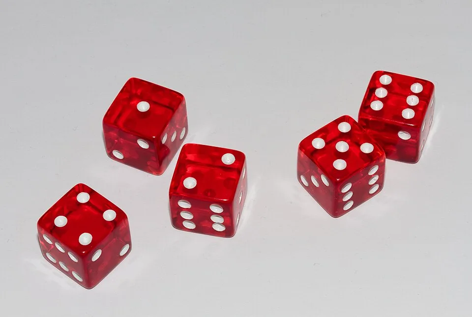
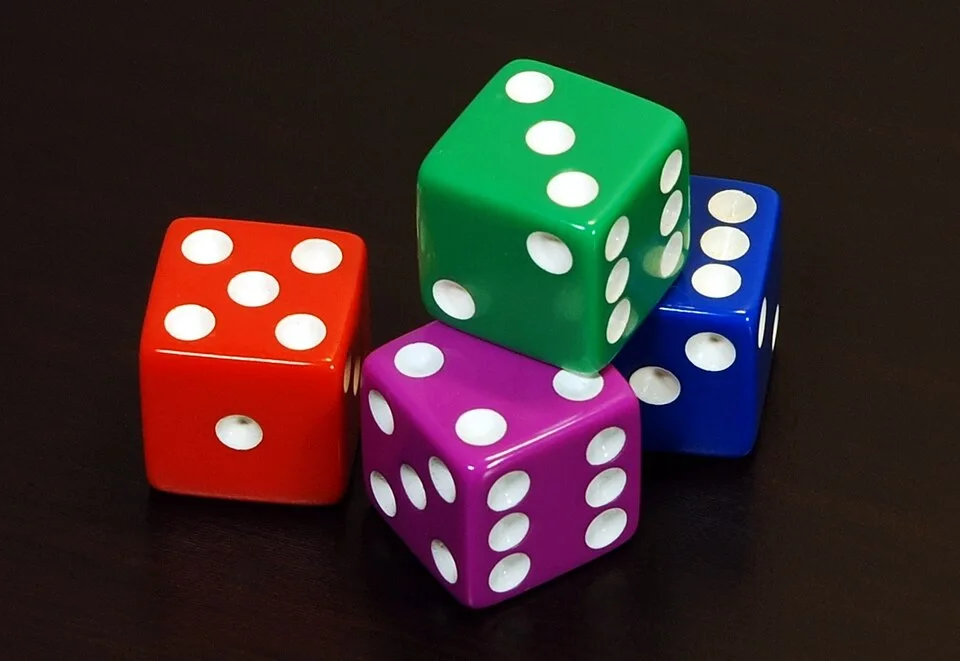
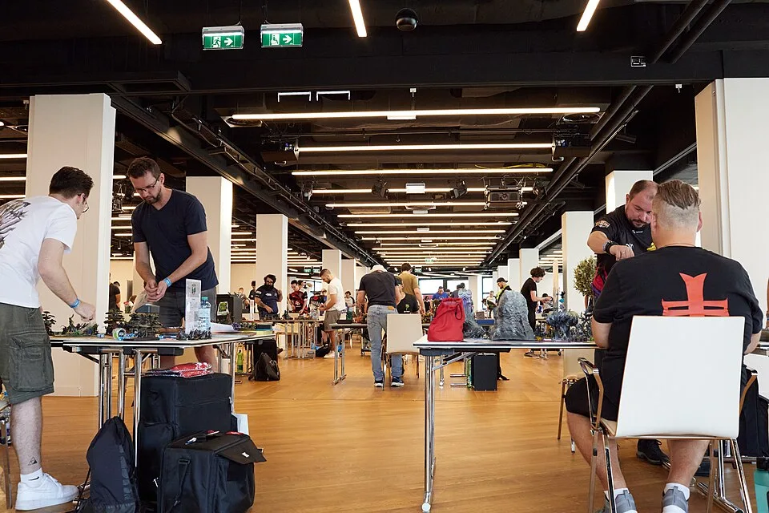

01ของที่ต้องมีเพื่อเล่นเกม
ข่าวดีคือของที่ "ต้องมีจริง ๆ" สำหรับการเล่นมีไม่มาก ส่วนใหญ่อยู่ในกล่องชุดเริ่มต้นแล้ว
โมเดลกองทัพ
ตัวละครจำลองที่ใช้เล่น เริ่มจากกล่อง Combat Patrol (คอมแบท พาโทรล) ซึ่งเป็นกองทัพขนาดเล็กพร้อมเล่นของแต่ละฝ่าย
ลูกเต๋าหกด้าน (D6)
ใช้เยอะมาก บางจังหวะต้องทอยทีละ 20–40 ลูก แนะนำให้มีสัก 20 ลูกขึ้นไป ใช้ลูกเต๋าทั่วไปก็ได้
ตลับเมตร (หน่วยนิ้ว)
ระยะทุกอย่างในเกมวัดเป็นนิ้ว (") และวัดได้ทุกเมื่อที่ต้องการ ใช้ตลับเมตรที่มีสเกลนิ้วก็พอ
โต๊ะและฉาก (Terrain)
เกมมาตรฐาน Strike Force ใช้พื้นที่ประมาณ 44" × 60" ฉากกั้นแนวยิงสำคัญมาก จะใช้กล่องกระดาษแทนตอนเริ่มก็ได้
กติกาและ Datasheet
กฎหลัก (Core Rules) + การ์ดข้อมูลยูนิตของทัพคุณ ดูได้จากหนังสือหรือแอปทางการ (ดูหัวข้อถัดไป)
คู่ต่อสู้ 1 คน
เกมมาตรฐานเล่น 2 คน ถ้ายังไม่มีเพื่อนเล่น ลองหาร้านเกมหรือกลุ่มผู้เล่นในเมืองของคุณ


02ของที่ต้องมีเพื่อประกอบและทำสี
โมเดลของ Games Workshop ขายเป็นชิ้นส่วนพลาสติกบนแผง (sprue) ยังไม่ประกอบและยังไม่ทำสี คุณจะต้องมี:
- คีมตัดพลาสติก (clippers) — สำคัญที่สุด ไม่มีในกล่องเริ่มต้นใดเลย อย่าบิดชิ้นส่วนออกด้วยมือหรือใช้กรรไกร
- ที่ขูดรอยตะเข็บ (mould line scraper) หรือคัตเตอร์ — ลบเส้นรอยต่อแม่พิมพ์ก่อนทำสี โมเดลจะดูเนียนขึ้นมาก
- กาวพลาสติก — ชุดเริ่มต้นของ 11th เป็นแบบ push-fit (กดประกอบได้ไม่ต้องใช้กาว) แต่กล่องอื่นส่วนใหญ่ต้องใช้กาว
- สีและพู่กัน — เริ่มจากสีพื้นฐานประมาณ 10 สี สีเชด (shade) 1 สี และพู่กันเบอร์กลาง 1 ด้าม ก็ทำสีได้ทั้งกองทัพเล็ก
- สเปรย์รองพื้น (primer) — ไม่บังคับ แต่ช่วยให้ทำสีเร็วขึ้นมาก
ในเกมกันเองใช้โมเดลที่ยังไม่ทำสีเล่นได้เลย แต่ในภารกิจแบบ Matched Play จะมีแต้มโบนัส Battle Ready (แบทเทิล เรดดี้) 10 แต้มสำหรับกองทัพที่ทำสีครบ
รายละเอียดการทำสีทีละขั้นอยู่ในหน้า ประกอบ & ทำสีโมเดล
03ชุดเริ่มต้นของ 11th Edition
ทุกกล่องเริ่มต้นของยุคนี้ใช้โมเดลสองฝ่ายคือ Space Marines (สเปซ มารีน) และ Orks (ออร์ค) ซึ่งเป็นทางที่คุ้มที่สุดในการเข้าสองทัพนี้
| กล่อง | โมเดล | สี/พู่กัน | กติกาและสนาม | เหมาะกับ |
|---|---|---|---|---|
| Introductory Set (อินโทรดักทอรี เซ็ต) | 12 ตัว | สี 6 สี + พู่กัน | คู่มือเล่นเกมแรก, แผ่นสนาม, ฉากกระดาษ | อยากลองทั้งทำสีและเล่นแบบประหยัด |
| Getting Started with Space Marines / Orks | 13 / 33 ตัว | สี 11 สี + พู่กัน + ที่ปาดเท็กซ์เจอร์ | คู่มือกองทัพ | เลือกฝ่ายได้แล้ว อยากเริ่มกองทัพเดียว |
| Starter Set (สตาร์ทเตอร์ เซ็ต) | 46 ตัว (Combat Patrol 2 ทัพ) | ไม่มี | หนังสือ Core Rules, บอร์ดเกม, ฉาก 15 ชิ้น | เล่นกับเพื่อน 2 คน แบ่งกันคนละทัพ |
| Armageddon (กล่องเปิดตัวรุ่น) | Blood Angels ปะทะ Orks | ไม่มี | หนังสือกฎ + หนังสือเนื้อเรื่อง + การ์ดโหมด Dominatus | นักสะสม/คนที่ชอบ Blood Angels (มักผลิตจำนวนจำกัด) |
ข้อมูลจำนวนโมเดลและสิ่งที่อยู่ในกล่องอ้างอิงจากร้านค้าและรีวิว ณ ก.ย. 2026 · ราคาต่างกันตามประเทศและร้าน (ตัวอย่าง: Starter Set บนเว็บทางการสหรัฐฯ ราคา US$255)
ซื้อกล่อง Combat Patrol ของทัพที่ชอบได้เลย ทุกฝ่ายมีกล่องนี้ เป็นกองทัพเล็กที่ออกแบบมาให้เล่นได้ทันที และเป็นแกนสำหรับขยายเป็นกองทัพใหญ่
04กติกาหาได้จากไหน?
| แหล่ง | มีอะไร | ต้องซื้อไหม |
|---|---|---|
| Core Rules (คอร์ รูลส์) | กฎหลักของเกมที่ทุกทัพใช้ร่วมกัน | มาในหนังสือของ Starter Set / Armageddon และมีในแอป |
| แอป Warhammer 40,000 | กฎหลักฉบับดิจิทัล (รวมกฎเสริมบางส่วนที่มีเฉพาะในแอป), ตัวจัดทัพ, ค่าแต้มของยูนิต | ดาวน์โหลดได้ บางส่วนต้องปลดล็อกด้วยการซื้อ Codex |
| Codex (โคเด็กซ์) | หนังสือประจำทัพ: เนื้อเรื่อง, Datasheet ทุกยูนิต, Detachment และ Stratagem | ซื้อ (ได้สิทธิ์ใช้ในแอปด้วย) |
| Faction Pack (แฟคชั่น แพ็ก) | เอกสาร PDF อัปเดตกฎของแต่ละฝ่าย | ดาวน์โหลดฟรีจากเว็บ Warhammer Community |
ต้นยุค 11th ยังใช้ Codex ของยุค 10th ได้ (มี errata/ปรับแก้ประกอบ) แล้วจะทยอยออก Codex ใหม่ เช่น Codex: Orks (5 ก.ย. 2026) และ Codex: Space Marines (3 ต.ค. 2026) — ก่อนซื้อหนังสือ ให้เช็กว่าเป็นของรุ่นล่าสุดหรือไม่
05เลือกทัพแรกยังไงดี?
คำแนะนำอันดับหนึ่งจากผู้เล่นเกือบทุกคน: "เลือกทัพที่คุณชอบหน้าตาที่สุด" เพราะคุณจะต้องใช้เวลาหลายสิบชั่วโมงประกอบและทำสีมัน ความชอบจะทำให้คุณไม่เลิกกลางทาง
- ชอบหน้าตาและเรื่องราวแบบไหน?อัศวินอวกาศ, หุ่นยนต์โบราณ, ปีศาจ, ฝูงสัตว์ประหลาด หรือทหารมนุษย์ธรรมดา — ดูได้ในหน้า ทัพทั้งหมด
- อยากเล่นสไตล์ไหน?ยิงจากระยะไกล, วิ่งเข้าตะลุมบอน, คุมพื้นที่ หรือใช้ลูกเล่นซับซ้อน
- อยากทาสีกี่ตัว?ทัพ "Elite" (เช่น Custodes, Grey Knights) มีโมเดลน้อยแต่เก่ง ทัพ "Horde" (เช่น Orks, Tyranids, Astra Militarum) มีโมเดลจำนวนมาก
- เพื่อนเล่นอะไรอยู่?ถ้าเพื่อนเล่นทัพหนึ่งอยู่แล้ว การเลือกทัพคู่ปรับช่วยให้ได้เล่นบ่อยขึ้น
- เริ่มจาก Combat Patrolซื้อกล่องเดียวก่อน ประกอบ ทำสี เล่นให้ได้สัก 2–3 เกม แล้วค่อยตัดสินใจขยาย
Space Marines (ทนทาน ทำได้ทุกอย่าง กฎตรงไปตรงมา มีโมเดลและข้อมูลสอนเล่นมากที่สุด) และ Necrons (ทนทาน ฟื้นคืนได้ ลงสีได้เร็ว) — แต่ถ้าคุณหลงรักทัพอื่น ก็เลือกทัพนั้นเลย ทุกทัพเรียนรู้ได้
06หาที่เล่นและคนเล่น
- ร้านเกม / ร้านโมเดล — หลายร้านมีโต๊ะพร้อมฉากให้เล่น และมีคืน Warhammer ประจำสัปดาห์ ลองถามร้านใกล้บ้าน
- กลุ่มโซเชียลของผู้เล่นในไทย — มักมีคนนัดเล่น สอนเล่น และประกาศงานทัวร์นาเมนต์
- เล่นกับเพื่อนที่บ้าน — ใช้โต๊ะกินข้าว ผ้าปู และกล่องกระดาษทำเป็นตึกก็สนุกได้

07เช็กลิสต์ก่อนไปต่อ
- รู้ว่าเกมนี้ต้องใช้ลูกเต๋า D6 ตลับเมตรแบบนิ้ว โต๊ะ และฉาก
- รู้ว่าชุดเริ่มต้นแต่ละแบบต่างกันอย่างไร
- รู้ว่ากติกามาจาก Core Rules + Datasheet/Codex ของทัพ และมีในแอปทางการ
- มีทัพในใจแล้วสัก 1–2 ทัพ (ถ้ายัง ไปดูหน้า ทัพทั้งหมด)